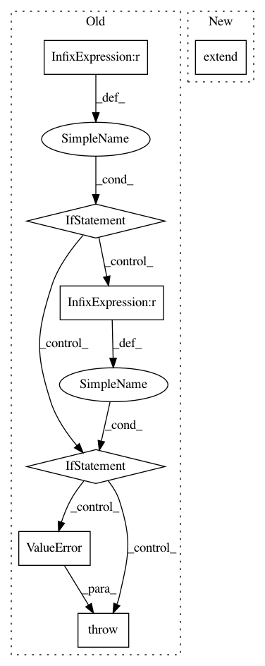

c490bc95a63a8c9bd00c0a202f1b3ba8c2a48b5a,dipy/io/stateful_tractogram.py,StatefulTractogram,__add__,#StatefulTractogram#Any#,206
Before Change
def __add__(self, other_sft):
Addition of two StatefulTractogram in a way that is consistent
with space, origin, data_per_point and data_per_streamline.
if self.space != other_sft.space:
raise ValueError("Inconsistent space between both sft.\n"
"Switch space of one or both sft before addition.")
if self.origin != other_sft.origin:
raise ValueError("Inconsistent origin between both sft.\n"
"Switch origin of one or both sft before addition.")
if self.get_data_per_point_keys() != other_sft.get_data_per_point_keys():
raise ValueError("Inconsistent data_per_point between both sft.\n"
"Either delete it from one or generate it for the "
"other.")
if self.get_data_per_streamline_keys() != other_sft.get_data_per_streamline_keys():
raise ValueError("Inconsistent data_per_streamline between both "
"sft.\nEither delete it from one or generate it "
"for the other.")
After Change
data_per_point.extend(other_sft.data_per_point)
data_per_streamline = deepcopy(self.data_per_streamline)
data_per_streamline.extend(other_sft.data_per_streamline)
streamlines = deepcopy(self.streamlines)
streamlines.extend(other_sft.streamlines)
In pattern: SUPERPATTERN
Frequency: 4
Non-data size: 7
Instances
Project Name: nipy/dipy
Commit Name: c490bc95a63a8c9bd00c0a202f1b3ba8c2a48b5a
Time: 2020-04-20
Author: francois.m.rheault@usherbrooke
File Name: dipy/io/stateful_tractogram.py
Class Name: StatefulTractogram
Method Name: __add__
Project Name: Pinafore/qb
Commit Name: ed86dfa55a2750324646e08e3f7e2cee5b667319
Time: 2018-07-09
Author: ski.rodriguez@gmail.com
File Name: qanta/guesser/elmo.py
Class Name: ElmoGuesser
Method Name: train
Project Name: pfnet-research/chainer-chemistry
Commit Name: b903f8ec84d21253a1eebff9b29519a9e934f254
Time: 2017-12-21
Author: corochannz@gmail.com
File Name: examples/tox21/train_tox21.py
Class Name:
Method Name: main
Project Name: rusty1s/pytorch_geometric
Commit Name: 3a90b261c8be2faf8f33cf3283e90b1b418da7b2
Time: 2017-10-17
Author: matthias.fey@tu-dortmund.de
File Name: torch_geometric/graph/geometry.py
Class Name:
Method Name: polar_coordinates